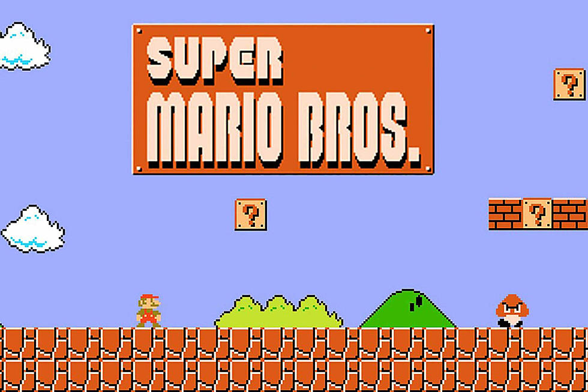

Q is for Q-learning
How can we train a computer to play a video game? Here the goal could be something like “beat a level as quickly as possible” or “collect as many points as you can” or both of those objectives at the same time. This is a very different task than the ones we’ve seen previously, such as trying to tell if a picture contains a dog, or how to group data together. To accomplish this we can use a framework of algorithms called reinforcement learning (or RL). Reinforcement learning tries to train an agent to learn a set of actions to achieve some goal. RL is used in a wide variety of disciplines such as
- Physics/chemistry. We might want to improve the yield of a particular chemical reaction by changing things like temperature or concentration. Doing this manually is time consuming and requires a lot of resources/expertise. We can train an RL model to learn experimental parameters which will help optimize the reaction.
- Financial trading
- Robotics
In all of these disciplines you need to have a simulation of the environment you want to explore. In the case of chemistry, you need to be able to simulate the effect of increasing the temperature of a chemical reaction. Learning to play a video game is an ideal task for RL since the simulation already exists.
Playing Super Mario Bros

Let’s imagine we’re trying to train a computer to learn to play Super Mario Bros. Here we have the computer (the agent) controlling how Mario can move. It has a set of actions it can perform:
- Move Mario to the left
- Move Mario to the right
- Run
- Jump
- Pause the game
The overall goal for RL algorithms is to figure out what is the best set of actions to take for a given state. For example, at the beginning of the level it’s better to move to the right instead of the left (or jumping in place). To figure out what the “best” set of actions is, we also need a specific goal such as “collect as many points as possible”. We do this by specifying something known as a reward function. In reinforcement learning the agent tries a bunch of different actions to try and maximize this reward function.
In the case of collecting as many points as possible, the reward function would go up the more points Mario gets. However, if our reward function is just based on the number of points, the agent will spend all it’s time trying to collect every coin, powerup etc. We also want to incentivize the agent to complete the level quickly. We can add penalties to the reward function to incentivize this behaviour. For example, we might subtract some number for each second Mario takes to complete the level. Or since Mario only has a small number of lives, we might subtract a large number from the reward function if Mario dies.
Here is the general strategy for reinforcement learning:
- Observe the environment
- Take some action(s) (e.g. moving right) based on some strategy
- Receive a reward/penalty
- Update the strategy based on the reward/penalty
- Perform many, many iterations until you find an optimal strategy
In RL there is a tradeoff between exploration and exploitation. Exploitation means doing the actions which you know will give you a reward (e.g. going for a particular coin block and getting 100 points). However, there may be actions that give an even bigger reward (e.g. grabbing the top of the flagpole gives 5000 points). You need to have a balance between exploitation (keep doing what gives you value) and exploration (trying new actions).
Types of reinforcement learning
There are two main categories of RL:
- Model based: Here the model estimates or predict the optimal strategy (or policy) based on the reward function itself. For example, in a given state the algorithm can say “if I jump I know the reward function will increase”
- Model free: Here the algorithm estimates the optimal policy without direct knowledge of the reward function. They rely on samples from previous iterations (e.g. jumping under a coin block gives a reward) to learn the best strategy. Q-learning is an example of a model free RL algorithm.
Q-learning
The “Q” in in Q-learning stands for quality. In this case quality means how useful a certain action is for gaining some future reward. Here, the agent maintains a Q-table which is a table of states and possible actions. The Q-table is used to calculate the maximum expected future reward for performing a certain action in a given state. Let’s walkthrough the Q-learning algorithm at a very high level
Step 1: Q-table initialization
Initially the Q-table is all zeroes (since we don’t know what actions will give rewards). In our Mario example, the initial Q-table could look like
| State/action | Move left | Move right | Jump | Hold run button |
|---|---|---|---|---|
| First screen | 0 | 0 | 0 | 0 |
| Second screen | 0 | 0 | 0 | 0 |
| … | … | … | … | … |
| End of level | 0 | 0 | 0 | 0 |
Step 2: Choose an action
There are two ways of choosing an action: randomly or based on the maximum value in the Q-table. Initially, all of the actions will be random (this is exploration) as we learn which actions lead to rewards. Eventually, most of the actions will be based on the Q-table.
Step 3: Perform the action
Here the agent performs the action (e.g. jumping). It’s worth noting that the order of the actions matters a lot. For example, if Mario is trying to jump over a pit he must first run to the right then jump (not jump then run to the right).
Step 4: Calculate the reward
Here we measure the reward based on the agents actions.
Step 5: Update the Q-table
Here we update the Q-table based on the agents actions and the reward. This helps the agent learn the expected future reward for a series of actions.
Step 6: Repeat
Steps 2-5 are repeated many, many times until training is stopped or some condition is met. At the end of training we should hopefully have a strategy which maximizes the reward function. After training the agent can choose actions for a given state based on the maximum value in the Q-table. In our Mario example the agent should learn that the best strategy at the beginning of the level is to run right then jump on the goomba (instead of just choosing actions at random).
Summary
Reinforcement learning is a very powerful area of machine learning, and still an active area of research. When using RL it’s critical to make sure the reward function matches the objective you are trying to achieve. If you would like to try training RL algorithms in practice, I recommend looking at the tutorials for the OpenAI gym package.